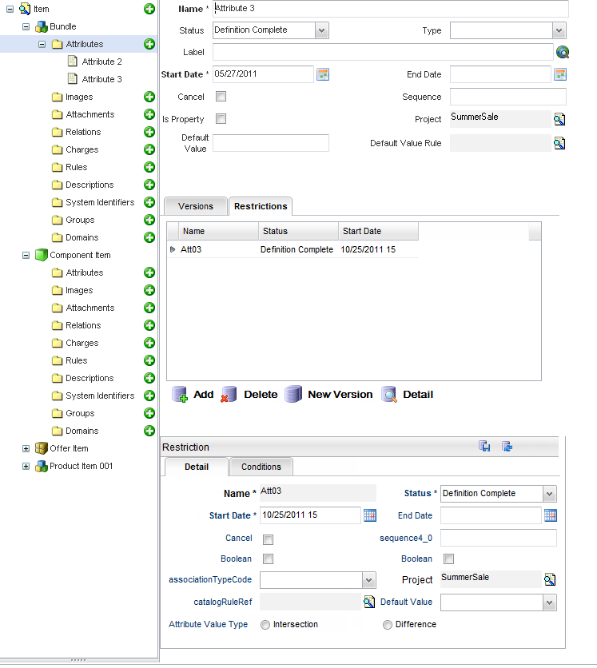

Restrictions can be applied on Item Attributes such that at runtime, either an item attribute is assigned a specific value or there is a condition that is applied on the item value.
Create a restriction
To create a restriction, complete these steps:
|  |
| Field | Description |
|---|---|
| Name | The name of the item attribute restriction for internal use when designing your catalog model. This field is not supported by language translation. |
| Status | A list of available Statuses for this restriction (for example, Definition and Active). |
| Start Date | The effective date of this attribute. Refer to Start and End dates for details. |
| End Date | The end date of this attribute represents the date when this attribute is no longer effective. Refer to Start and End dates for details. |
| Cancel | Objects that are extended have this Cancel flag checked. If the flag is checked, then the extended item does not inherit that association. |
| Sequence | Number value used for attribute restriction sorting. |
| Immutable | This flag indicates whether the associated item attribute value can be modified at runtime. |
| isNull | If checked, a null value is allowed. Otherwise, a null value is not allowed. This property is only defined in a restriction object and there is no logic to use it to perform actions in Catalog. Instead, you need to use the script API to get this property value, and then implement your logic in either an adding or validation action. |
| Association Type | This field indicates the restriction association type. |
| Project | Each object is assigned to a project. This field defaults to the active or opened project when the attribute is first created. |
| Catalog Rule Def | The Default Value can be derived from a condition. This field launches the Catalog Rule Finder. The user is able to select a Catalog Rule that determines the runtime Default Value for this item attribute. |
| Default Value | The static value that appears in the client application during runtime for this item attribute. |
| Attribute Value Type | Selecting the Intersection option returns the codes defined in the restriction. Selecting Difference returns the difference between the code table codes and the restriction codes. |
| Field | Description |
|---|---|
| Code | The code used to identify the item attribute's conditional restriction. |
| Rule Name | Launches the Catalog Rule finder. The user is able to select from previously defined rules in the Catalog Rule Language. |
| Name | The name of the attribute can be used as a visual label for internal use when designing your catalog model. This field is not supported by language translation. |
| Type | Denotes one of the following rule types: Eligibility, Validation, Availability, and Rank. |
| Status | A list of available statuses for this condition (for example, Definition and Active). |
| Start Date | The effective date of this attribute. Refer to Start and End dates for details. |
| End Date | The end date of this attribute represents the date when this attribute is no longer effective. Refer to Start and End dates for details. |
| Label | The visual label used for this condition, which is used in the application user interface. This field is a translational string that supports language translations (refer to Velocity Studio's Translation Element for more details). |
| Cancel | Objects that are extended have this Cancel flag checked. If the flag is checked, then the extended item does not inherit that association. |
| Message Code | Error message code that is invoked when the rule returns false. |
| Sequence | Number value used for condition sorting. |
| Project | Each object is assigned to a project. This field defaults to the active or opened project when the attribute is first created. |
| Language | Choose from either Catalog Rule Language or JavaScript. |
| Script | This launches an editor for defining a condition. |